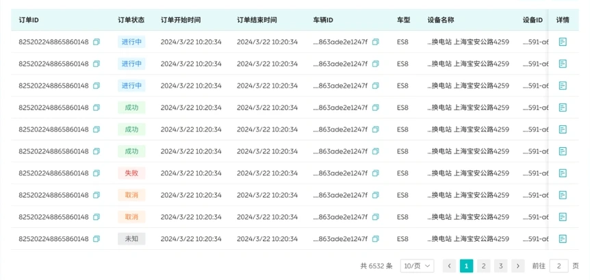
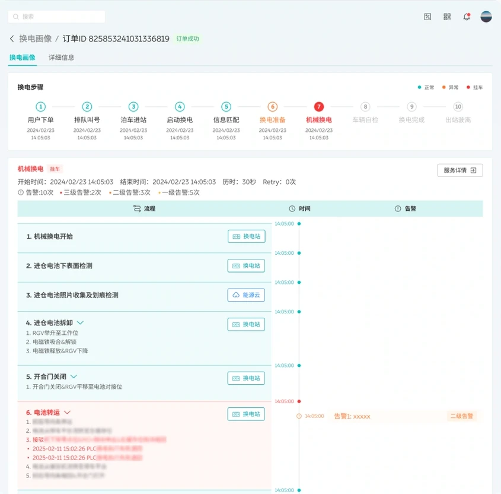
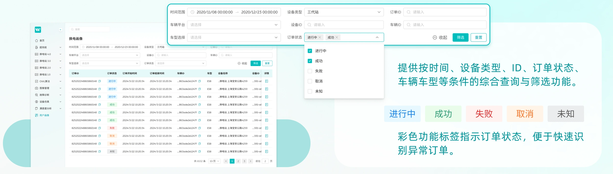
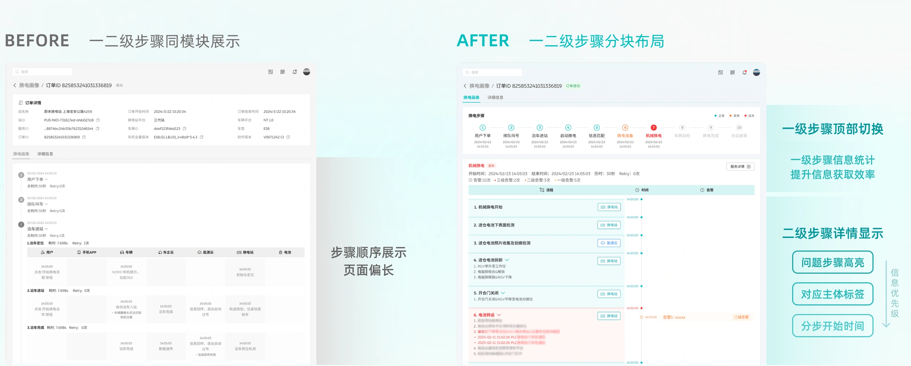

蔚來能源 · 企業 Web
讓換電異常更容易排查
為設備監測平台重整訂單看板與換電詳情，讓運維能從列表定位問題，再進入步驟排查。
蔚來能源 · 參與換電畫像版本迭代
體驗操作訂單看板、流程詳情與狀態元件規範。

設計稿互動重現
一筆成功訂單，哪一步曾出現告警？

從清單打開一筆示例訂單
先用列表中的狀態辨認整單結果，再進入示例詳情。

篩選後仍需查看詳情
清單現在只顯示成功訂單。打開一筆示例詳情，判斷它在執行中是否有告警。

找出機械換電階段
訂單頁首顯示成功。沿一級步驟尋找標出異常的機械換電階段。
定位電池轉運
在這一階段的二級步驟中，電池轉運以告警色及文字標示。點選它查看記錄。

在同一行核對步驟與告警
這張原稿裡，電池轉運曾有二級告警，而整單最終成功。保留這兩層狀態，運維才有線索回溯過程。
示例資料 · 根據原設計稿製作
設計取捨
訂單結果和執行過程是兩個判斷層次。清單適合確認整單狀態；要找出中間曾經掛起的步驟，就需要保留階段、時間線與告警的關係。
走查時我會看什麼
可讓運維說出整單結果、告警所在階段與二級步驟。三個答案可分別檢查資訊層級是否清楚。
設計思路
當一筆換電訂單出現異常，運維該如何從訂單列表快速定位到具體步驟？
- 先找訂單縮小查詢範圍，確認訂單狀態
- 再判階段用一級步驟定位異常所在階段
- 查看細節結合二級步驟、時間與警示排查
從排查任務定義問題
我在蔚來能源參與設備監測平台「換電畫像」的版本迭代。一次排查實際包含兩類判斷：先找出目標訂單，再判斷哪一步出了問題。前者需要在大量紀錄里縮小範圍，後者需要理解一筆訂單內的執行過程。
舊版把多級步驟按先後順序連續鋪開，時間順序完整，但查找某個階段時需要在長頁中反復定位。改版目標因此落在兩個可觀察的任務上：能否準確找到目標訂單，以及進入詳情後能否讀懂異常發生在哪個階段。
按任務拆分介面
看板解決「找哪條」，詳情解決「為甚麼異常」。兩層資訊的密度和組織方式不同，我把它們分開設計。
- 先篩選，再辨別狀態
- 將時間、設備類型、訂單 ID 和狀態作為組合條件。知道訂單 ID 時可以直找，線索較少時可以先按條件收窄，再用狀態標籤掃讀。
- 保留順序，縮短查找路徑
- 詳情保留執行時間線，並將一級階段與二級步驟分區。運維可以先切換到相關階段，再查看該階段的時間、狀態和警示。


交付與驗證思路
交付包含訂單看板、流程詳情和狀態元件規範。狀態標籤在列表和詳情中沿用同一套含義，方便使用者在不同頁面識別同一種狀態。同期還參與了家用充電樁小程序，覆蓋啓動、充電中、完成和異常回饋。
- 如何檢查設計是否奏效
- 讓運維分別完成「從已知 ID 查單」和「按條件篩出失敗訂單，再指出異常步驟」。可紀錄定位用時、是否找對步驟、以及是否需要回到列表重查。